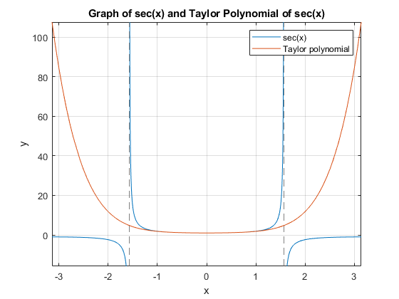

clc
clear
close all
format long g
disp('Zyad Khan - MATLAB Chapter 11 Assignment')
syms x
f(x) = sec(x);
Taylor = taylor(f(x),'order',8);
disp(['The Taylor polynomial for sec(x) is f(x)=' char(Taylor)])
fplot(f(x), [-pi,pi]);
grid on; hold on;
fplot(Taylor, [-pi,pi])
title('Graph of sec(x) and Taylor Polynomial of sec(x)')
legend('sec(x)', 'Taylor polynomial')
xlabel('x')
ylabel('y')
fp3 = subs(f(x),(pi/3));
pp3 = subs(Taylor,(pi/3));
absolute_error1 = abs(fp3-pp3);
fprintf('The absolute error between sec x and the taylor polynomial with the degree of 7 at pi/3 is %.5f.\n', absolute_error1)
fp6 = subs(f(x),(pi/6));
pp6 = subs(Taylor,(pi/6));
absolute_error2 = abs(fp6-pp6);
fprintf('The absolute error between sec x and the taylor polynomial with the degree of 7 at pi/6 is %.5f.\n', absolute_error2)
if absolute_error1 < 0.01
fprintf('The Taylor polynomial approximation is good when x is near pi/3.\n')
else
fprintf('The Taylor polynomial approximation is poor when x is near pi/3.\n')
end
if absolute_error2 < 0.01
fprintf('The Taylor polynomial approximation is good when x is near pi/6.\n')
else
fprintf('The Taylor polynomial approximation is poor when x is near pi/6.\n')
end
Zyad Khan - MATLAB Chapter 11 Assignment
The Taylor polynomial for sec(x) is f(x)=x^2/2 + (5*x^4)/24 + (61*x^6)/720 + 1
The absolute error between sec x and the taylor polynomial with the degree of 7 at pi/3 is 0.08942.
The absolute error between sec x and the taylor polynomial with the degree of 7 at pi/6 is 0.00022.
The Taylor polynomial approximation is poor when x is near pi/3.
The Taylor polynomial approximation is good when x is near pi/6.
